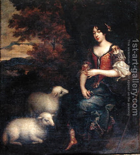

Bava Kamma 118 - Thief Returns Stolen Object and Tells the Owner
If a river inundated a stolen field, the thief can say, "Here is your field", but Rabbi Eliezer obligates him to pay.
If one stole a lamb from a flock and returned it without notifying the owner, and that lamb subsequently died or was stolen, the thief is responsible for it.
If the owner was aware of the theft, but then counted the flock and found it complete, the thief is not liable for any future mishap. But if the owner was not aware of the theft, counting does not help, since the thief has taught the lamb to go astray, and the owner needs to know which lamb it was.